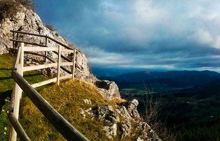
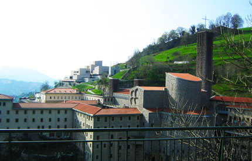
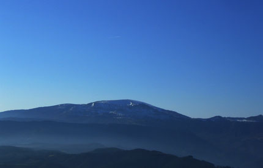
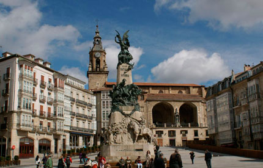

The environment
Located in Guipúzcoa and strategically situated between Vizcaya and Álava, Leintz-Gatzaga remains in the Leintz Valley, within the Alto Deba region, located in the centre of the Basque Country.
What to visit

Natural Park of Aizkorri-Aratz
Guipúzcoa, Escoriaza

Sanctuary of Arantzazu
Guipúzcoa, Oñate

Natural Park of Urkiola
Vizcaya, Urkiola

Natural Park of Gorbea
Vizcaya, Areatza

Ullíbarri-Gamboa
Álava, Landa

Vitoria, Álava
What to do
To less than 1 km:
- Guided visits
- Basque sports
- Hiking
- Mountain activities
A 5 km:
- Horse riding
- Mountain bike
- Climbing
- Aquatics
- Puenting
- Rappel
- Speleology
- Fishing
- Golf
- Parapente
- Cheese saling